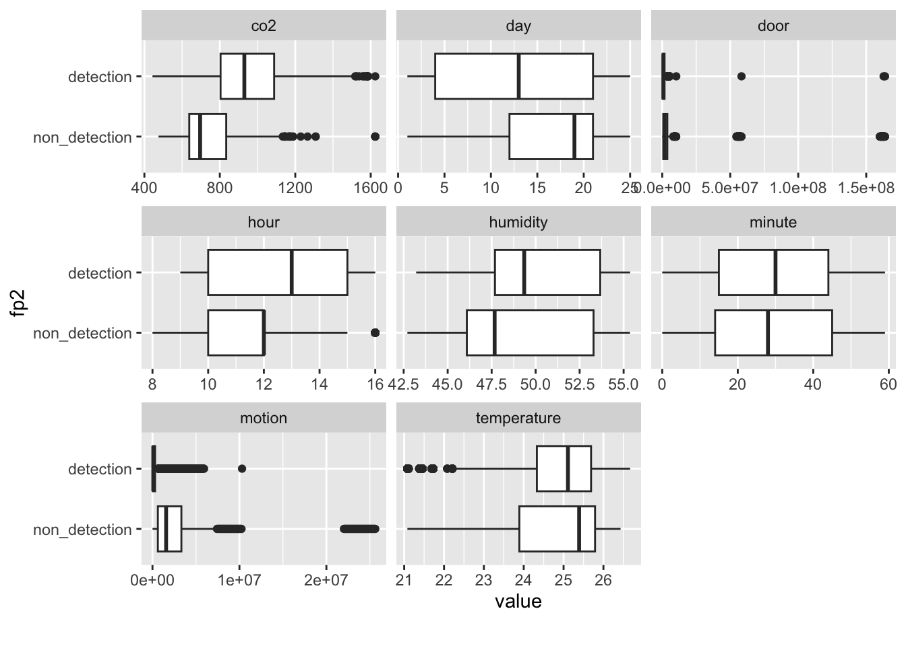
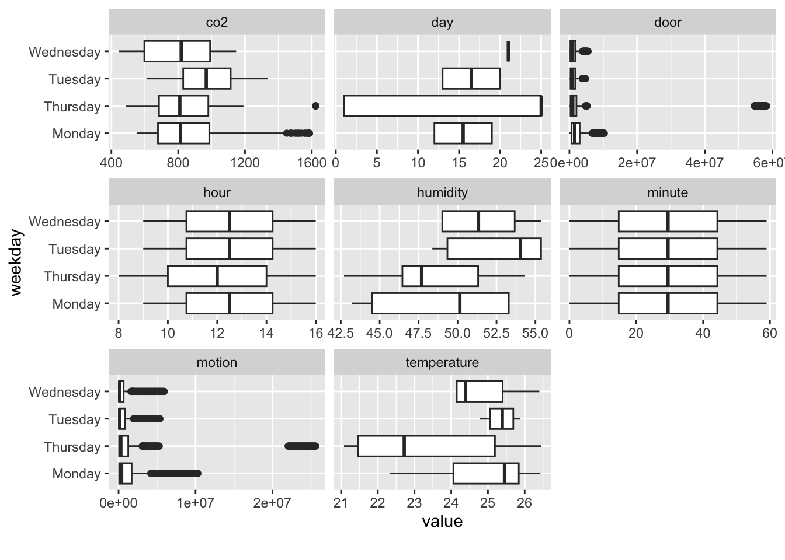
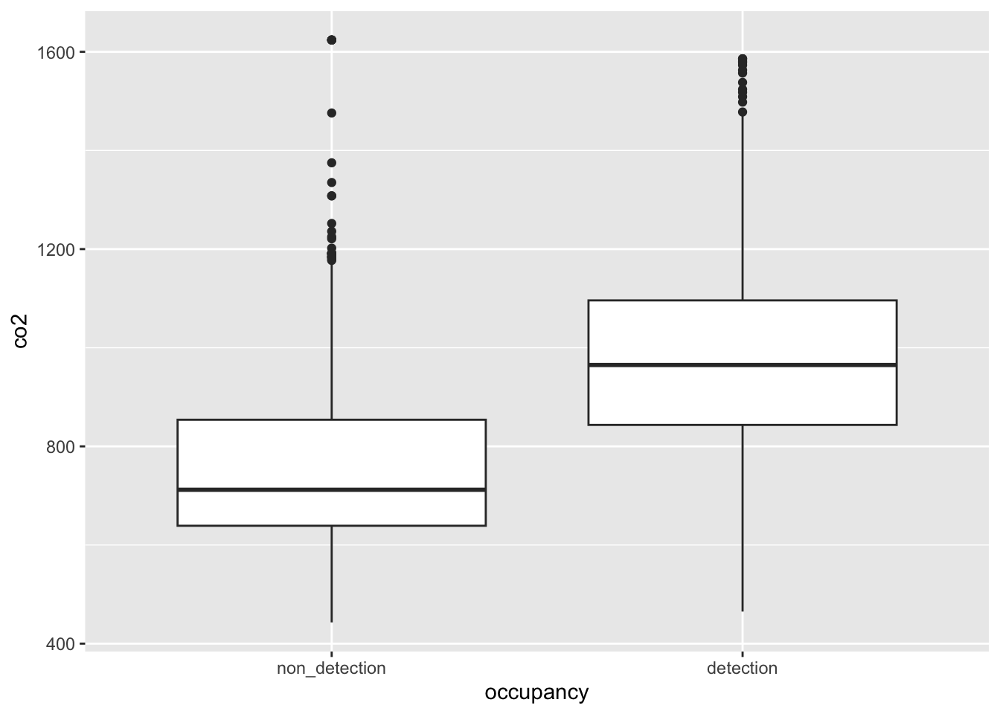

aqara <- fread("integrated_0526_0622.csv")
aqara <- aqara |>
mutate(fp2 = factor(fp2,labels=c("non_detection","detection")),
occupancy = factor(occupancy,labels=c("non_detection","detection")),
timestamp = timestamp - 15*3600)1 Exploratory Data Analysis
1.1 Raw Data in a Glance
본 실험의 목적은 아카라 다중 센서를 활용해서 재실 여부를 예측하는 모델을 개발하기 위함이다.
그리고, 궁극적으로는 FP2센서를 재실여부를 확인하는 ground truth장치로 사용할 수 있는지 확인하는 동시에 그 방법을 모색하기 위함이다. 단, 실험 데이터의 부족으로 인해 이번 실험에서는 FP2센서를 재실 감지 예측을 위해 사용된 센서들 중의 하나의 역할만 담당한다.
실험에서 사용된 아카라 센서는 CO2 센서, 온습도 센서, 열림감지 센서, 모션 센서, FP2 센서이다. 학습을 위한 재실여부의 Ground Truth 데이터는 아카라의 G2HPro 카메라로 찍은 영상을 Yolov5로 분류하여 확보하였다.
열림감지 센서와 모션센서와 같은 바이너리 센서의 경우 이벤트 발생 여부를 활용하는 대신, 이벤트가 발생한 후 새로운 이벤트가 발생할 떼가지의 걸린 시간을 그 값으로 활용했다. 열림감지 센서의 경우 이진 데이터보다 시간 데이터를 사용했을 때 예측력이 더 기여했으며, 모센센서의 경우 이벤트를 감지한 경우만 저장되는 메카니즘으로 인해 이진값의 의미가 없기 때문에 이벤트 사이의 경과 시간을 그 파생변수로 활용하게 되었다.
1.1.1 데이터 로딩
5일간(월,화,수,목,일)의 데이터가 수집되었으며, 이중 4일간(월,화,수,목)의 데이터를 이용해서 모델링을 수행하였다.
Occupancy은 Ground Truth로 G2HPro (+ Yolov5)로 부터 얻은 데이터이다. FP2 경우 이진데이터를 그대로 활용했다.
FP2와 Occupancy는 모델링을 위해 factor형으로 변환하였다.
1.1.2 Skimming Data
총 3900개의 데이터가 확보되었다.
timestamp, co2, temperature, humidity,door, motion, fp2가 재실여부 예측을 위한 기본 features로 활용되며, occupancy가 target변수이다.
timestamp: datetime feature
temperature,humidity,door, motion: numeric features
fp2: factor type binary feature
aqara |> str()Classes 'data.table' and 'data.frame': 3900 obs. of 8 variables:
$ timestamp : POSIXct, format: "2023-05-25 08:00:00" "2023-05-25 08:01:00" ...
$ co2 : num 560 590 590 590 590 590 625 625 625 625 ...
$ temperature: num 2297 2297 2297 2297 2297 ...
$ humidity : num 4271 4271 4271 4271 4271 ...
$ door : num 54613010 54673025 54733026 54793030 54853005 ...
$ motion : num 22018948 22078965 22138954 22198955 22258939 ...
$ fp2 : Factor w/ 2 levels "non_detection",..: 1 1 1 1 1 1 1 1 1 1 ...
$ occupancy : Factor w/ 2 levels "non_detection",..: 1 1 1 1 1 1 1 1 1 1 ...
- attr(*, ".internal.selfref")=<externalptr> aqara |> skim()| Name | aqara |
| Number of rows | 3900 |
| Number of columns | 8 |
| Key | NULL |
| _______________________ | |
| Column type frequency: | |
| factor | 2 |
| numeric | 5 |
| POSIXct | 1 |
| ________________________ | |
| Group variables | None |
Variable type: factor
| skim_variable | n_missing | complete_rate | ordered | n_unique | top_counts |
|---|---|---|---|---|---|
| fp2 | 0 | 1 | FALSE | 2 | det: 2718, non: 1182 |
| occupancy | 0 | 1 | FALSE | 2 | det: 2199, non: 1701 |
Variable type: numeric
| skim_variable | n_missing | complete_rate | mean | sd | p0 | p25 | p50 | p75 | p100 | hist |
|---|---|---|---|---|---|---|---|---|---|---|
| co2 | 0 | 1 | 882.93 | 217.76 | 443 | 703.0 | 864.0 | 1045 | 1624 | ▅▇▆▂▁ |
| temperature | 0 | 1 | 2471.75 | 145.41 | 2108 | 2433.0 | 2518.0 | 2570 | 2667 | ▂▂▃▇▇ |
| humidity | 0 | 1 | 4999.89 | 361.70 | 4271 | 4716.0 | 4935.0 | 5348 | 5537 | ▂▆▅▃▇ |
| door | 0 | 1 | 4935426.47 | 21467539.89 | 107 | 378347.2 | 1064642.5 | 2147328 | 163814931 | ▇▁▁▁▁ |
| motion | 0 | 1 | 1267060.27 | 3239425.31 | 897 | 54805.5 | 204646.5 | 1147671 | 25618955 | ▇▁▁▁▁ |
Variable type: POSIXct
| skim_variable | n_missing | complete_rate | min | max | median | n_unique |
|---|---|---|---|---|---|---|
| timestamp | 0 | 1 | 2023-05-25 08:00:00 | 2023-06-21 16:59:00 | 2023-06-12 16:29:30 | 3900 |
1.1.3 날짜/시간 관련 파생변수 생성
timestamp로 부터 year,month, day, weekday, hour, minute라는 파생 변수 생성했다. 다만, 데이터 제약인해 year, month, day, weekday, minute는 추후 모델링시 활용하지 않았다. weekday는 의미있는 파생변수가 될 수 있으나, 금/토의 데이터가 없는 관계로 이번 실험에서는 활용하지 않을 예정이다.
aqara <- aqara |>
mutate(year = year(timestamp),
month = month(timestamp),
day = day(timestamp),
weekday = weekdays(timestamp),
hour = hour(timestamp),
minute = minute(timestamp),
temperature = temperature/100,
humidity = humidity/100)
aqara |>
head() timestamp co2 temperature humidity door motion fp2
1: 2023-05-25 08:00:00 560 22.97 42.71 54613010 22018948 non_detection
2: 2023-05-25 08:01:00 590 22.97 42.71 54673025 22078965 non_detection
3: 2023-05-25 08:02:00 590 22.97 42.71 54733026 22138954 non_detection
4: 2023-05-25 08:03:00 590 22.97 42.71 54793030 22198955 non_detection
5: 2023-05-25 08:04:00 590 22.97 42.71 54853005 22258939 non_detection
6: 2023-05-25 08:05:00 590 22.97 42.71 54913014 22318954 non_detection
occupancy year month day weekday hour minute
1: non_detection 2023 5 25 Thursday 8 0
2: non_detection 2023 5 25 Thursday 8 1
3: non_detection 2023 5 25 Thursday 8 2
4: non_detection 2023 5 25 Thursday 8 3
5: non_detection 2023 5 25 Thursday 8 4
6: non_detection 2023 5 25 Thursday 8 5table(aqara$weekday)
Monday Sunday Thursday Tuesday Wednesday
960 480 1020 960 480 1.2 Plot Analysis
1.2.1 박스플롯
환경 센서중 humidity경우는 이상치가 전혀 없었으나, co2는 상대적으로 큰 이상치가 발견되었으며, 온도의 경우 낮은 온도에서 상대적으로 많은 이상치가 기록되었다. co2 이상치의 경우 실험과정에서 센서 자체 테스트했을때 기록된 데이터로 추측된다.
aqara |>
select_if(is.numeric) |>
gather() |>
ggplot(mapping=aes(x=value,fill=key)) +
facet_wrap(~key,scale='free')+
geom_boxplot() +
theme_minimal() +
theme(legend.position='none')1.2.2 히스토그램
환경센서 중 co2 경우 정규분포의 형태를 일부 보이고 있으나, 상위값에 이상치가 보인다.
반면에 temperature 경우 오른쪽으로 기울어진 분포를 보이고 하위값에 많은 이상치가 보인다. motion과 door센서의 경우 극단적으로 왼쪽으로 기울어진 (right skewed) 분포를 보이고 있다.
aqara |>
select_if(is.numeric) |>
pivot_longer(cols=everything()) |>
ggplot(mapping=aes(x=value,fill=name)) +
geom_histogram() +
facet_wrap(~name,scale='free') +
theme_minimal() +
theme(legend.position='none')1.2.3 Occupancy유무에 따른 수치형 변수 박스플롯
재실(detection)의 경우 예상한 바와 같이 co2가 상대적으로 높다. humidity와 temperature의 경우도 재실이 확인된 경우가 그렇지 않은 경우보다 중위값이 높게 분포 되었다. hour의 박스 플롯을 보면 1시 이후에는 항상 재실 상태임을 확인할 수 있다.
plot_boxplot(aqara,by = "occupancy",ncol=3)1.2.4 fp2 감지 유무에 따른 수치형 변수 박스플롯
fp2 감지 유무의 경우 occupancy 감지 유무의 경우와 비슷한 경향을 보이고 있다. temperature의 경우 중위값은 재실감지의 경우가 약간 낮게 나왔으나, 전체적인 분포는 상대적으로 높은 쪽으로 기울어져 있다.
plot_boxplot(aqara,by = "fp2",ncol=3)
1.2.5 Occupancy 유무에 따른 범주형 변수 바 플롯
fp2의 경우 detection 경우보다 non-detection 경우가 훨씬 더 정분류율이 높았다.
즉, true negative rate > true positive rate
요일의 경우도 occupancy유무에 따라 다른 패턴을 보였으나, 금/토 데이터 부재로 실제 모델링에서는 사용하지 않을 예정이다.
plot_bar(data=aqara |> select(-timestamp),by="occupancy",ncol=2)본 실험 (위 bar plot에서 참조)에서는 일요일 근무자가 있었던 관계로 일반적인 상황으로 보기에는 어렵기 때문에, 배제하였다.
aqara <- aqara |>
filter(!weekday=='Sunday') 1.2.6 요일별 수치형 변수 박스플롯
앞에서 설명한 것처럼 금/토 데이터가 부재이고, 실제로 다른 요일의 경우도 각각 1일 데이터만 확보된 상태이므로 모델링에 사용하기에는 부적합하다.
plot_boxplot(aqara,by = "weekday",ncol=3)
1.2.7 상관계수
motion센서와 door센서간에는 매우 높은 상관 관계를 가지고 있다. features들간의 유의성을 추론할 경우 다중 공선성 문제의 소지가 있으나, 본 실험은 추론보다는 예측을 대상으로 삼고 있으므로, 무시한다.
aqara |>
select(co2,temperature,humidity,door,motion,hour,fp2) |>
plot_correlation(cor_args = list(use ="complete.obs"))1.2.8 Occupancy 유무에 따른 pairs플롯 및 기타
aqara |>
select(co2,temperature,humidity,door,motion,hour,occupancy) |>
ggpairs(aes(fill=occupancy))aqara |>
ggplot(aes(x=occupancy,y=co2)) +
geom_boxplot()
aqara %>%
ggplot(aes(x=weekday,y=co2),col=weekday) +
geom_boxplot()aqara |>
group_by(occupancy) |>
summarise(min_co2 = min(co2),
mean_co2 = mean(co2),
max_co2 = max(co2),
min_temperature = min(temperature)*100,
mean_temperature = mean(temperature)*100,
max_temperature = max(temperature)*100,
min_humidity = min(humidity)*100,
mean_humidity = mean(humidity)*100,
max_humidity = max(humidity)*100)# A tibble: 2 × 10
occupancy min_co2 mean_co2 max_co2 min_temperature mean_temperature
<fct> <dbl> <dbl> <dbl> <dbl> <dbl>
1 non_detection 443 757. 1624 2108 2427.
2 detection 465 972. 1586 2108 2478.
# ℹ 4 more variables: max_temperature <dbl>, min_humidity <dbl>,
# mean_humidity <dbl>, max_humidity <dbl>1.3 EDA 데이터 저장
write.csv(aqara,"eda.csv")